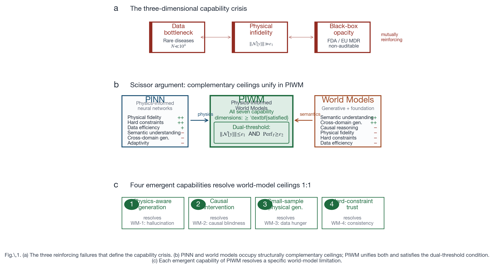
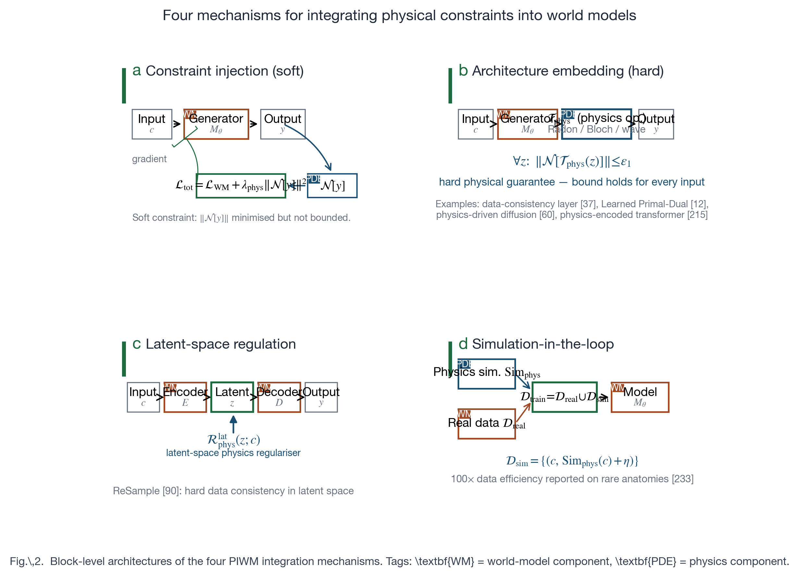
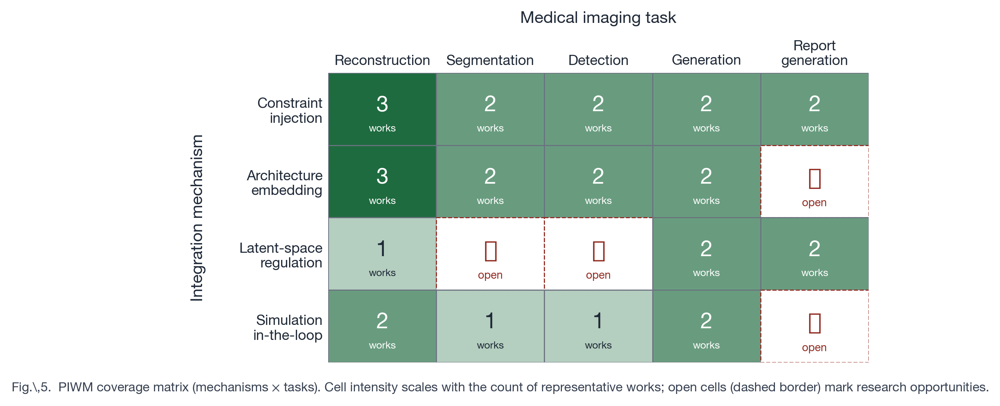
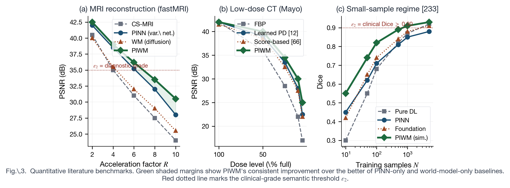
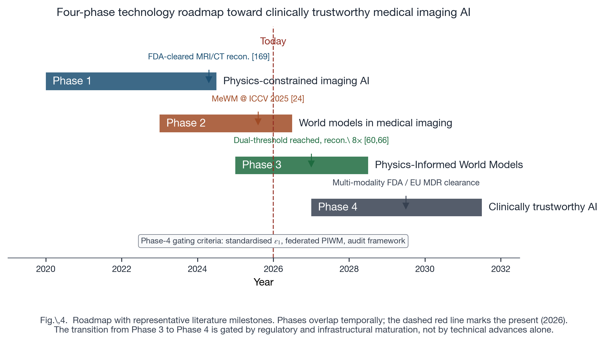

Survey
Abstract
Medical imaging AI is converging from two previously separate streams. Physics-Informed Neural Networks (PINN) embed governing equations of medical imaging physics (Bloch, Radon, wave, reaction-diffusion, continuum mechanics) into deep networks; world models capture rich semantic, anatomical, and dynamical priors through large-scale generative or self-supervised pretraining. Each stream has reached a structural ceiling.
Pure PINN lacks semantic understanding, individual variation adaptivity, and cross-domain generalization. Pure world models hallucinate physically implausible images, fail at causal intervention, demand massive training data, and offer no hard physical consistency guarantees. We argue these seven limitations are pairwise complementary—the scissor argument—and that Physics-Informed World Models (PIWM) are the natural integration that resolves them simultaneously.
The survey formalizes the PIWM paradigm, introduces the physical-constraint-type axis unifying radiology and pathology, develops a taxonomy of four integration mechanisms, maps PIWM coverage across five medical imaging tasks, constructs literature-grounded capability matrices, operationalizes the paradigm-shift claim as a falsifiable dual-threshold hypothesis, and presents a four-phase technology roadmap toward clinically trustworthy AI.
Originality
Seven Framework Contributions
Scissor argument
3 PINN ceilings + 4 world-model ceilings are pairwise complementary; PIWM resolves all seven.
Physical-Constraint-Type axis
Wave-equation family (MRI / CT / US) vs. mechanical-equation family (tumor / tissue / cell) — a single axis unifying radiology and pathology.
Four integration mechanisms
Constraint injection, architecture embedding, latent-space regulation, simulation-in-the-loop — each with formal loss / architectural specification.
4 × 5 application matrix
Mechanism × task map with method-annotated cells across reconstruction, segmentation, detection, generation, and report.
Capability matrices
Five-dimension evaluation (radiology + pathology) with literature-grounded PSNR, Dice, AUC, and cross-site benchmarks.
Dual-threshold hypothesis
Falsifiable joint condition: |𝒩[y]| ≤ ε₁ AND Perf_T ≥ ε₂ simultaneously.
Four-phase technology roadmap
PINN (2020–2024) → World models (2023–2026) → PIWM (2025–2028) → Clinically trustworthy AI (2027+), with phase-transition gating criteria and seven enabling technologies.
Structural Argument
The Scissor Argument
Where PINN cannot reason semantically, world models can. Where world models cannot guarantee physical consistency, PINN can. Their integration—PIWM—is the natural resolution.

Taxonomy
Four Integration Mechanisms
Each mechanism enforces |𝒩[y]| ≤ ε₁ through a different architectural or training-time strategy. The mechanisms are not mutually exclusive — many systems combine them.

① Constraint injection
Soft, training-time. Physical residual added to the world-model loss. Strength: flexibility. Examples: PhysDiff, DPS-MRI, score-based diffusion priors.
② Architecture embedding
Hard, structural. Output passes through a physics-encoded operator. Strength: hard guarantee. Examples: Learned Primal-Dual, data-consistency layer, physics-driven diffusion.
③ Latent-space regulation
Physical constraints applied in latent space. Strength: combines hard physics with semantic latent richness. Examples: ReSample, physics-informed latent diffusion.
④ Simulation-in-the-loop
Physical simulator generates synthetic training data. Strength: 10–100× data efficiency. Examples: Field II, Bloch dictionary + DRONE, rare-class augmentation.
Application Map
PIWM Application Matrix (4 × 5)
Four mechanisms × five medical imaging tasks define a 20-cell map. Densely populated cells indicate mature literature; sparse cells indicate open research opportunities.

Empirical
Quantitative Benchmarks

- MRI 8× acceleration: PIWM (diffusion prior + DC layer) reaches PSNR ≈ 35–37 dB — 1.5–3 dB above pure physics-encoded baselines.
- Low-dose CT (25% dose): Learned Primal-Dual reaches PSNR ≈ 33 dB on AAPM Mayo — 1.5–2 dB above FBPConvNet.
- Data efficiency: MR fingerprinting reaches clinical-grade T₁/T₂ at N ≈ 50 vs. N > 5,000 for non-physics baselines — a 100× multiplier.
- OOD robustness: Foundation-model-augmented PIWM reduces cross-vendor MRI degradation to ≤ 1 dB.
- Regulatory signature: No pure-world-model reconstruction system has received FDA clearance for primary diagnostic use; multiple PIWM-adjacent systems have.
Trajectory
Four-Phase Technology Roadmap

2020–2024
Phase 1 — PINN imaging AI
Vendor-deployed physics-encoded MRI reconstruction with FDA 510(k) clearance.
2023–2026
Phase 2 — World models
Medical foundation models (UNI, CONCH, Virchow, Prov-GigaPath); Medical World Model (MeWM).
2025–2028
Phase 3 — PIWM
Integrated paradigm satisfying ε₁ ∧ ε₂ for selected radiology tasks; pathology PIWM emerging.
2027+
Phase 4 — Clinically trustworthy AI
FDA / EU MDR clearances with auditable physical constraints; routine clinical deployment.
Falsifiable Hypothesis
Dual-Threshold Paradigm-Shift Condition
A medical imaging AI system S satisfies the PIWM paradigm-shift condition if and only if:
(i) Physical-fidelity threshold: |𝒩[y]| ≤ ε₁ — e.g., MRI k-space residual ≤ 0.01, CT Radon residual ≤ 0.02, biomechanical equilibrium residual ≤ 0.05.
(ii) Semantic-accuracy threshold: Perf_T ≥ ε₂ — e.g., Dice ≥ 0.90, AUC ≥ 0.85, PSNR ≥ 35 dB.
The two thresholds are jointly required. Pure PINN clears (i) only; pure world models approach (ii) only; PIWM is the first framework with structural capacity to satisfy both simultaneously.
Companion Curation
Curated Resource Collection
The eight curated lists mirror the survey's organization — readers can locate primary sources for any cell of the application or capability matrices.
01 · Foundations
World models, PINN, neural operators, diffusion, foundation models.
02 · PIWM Methods
Methods organized by the four integration mechanisms.
03 · Datasets
fastMRI, AAPM Mayo, TCGA, MSD, simulator suites.
04 · Benchmarks
Metrics for ε₁ and ε₂; cross-site protocols.
05 · Open Source
Field II, k-Wave, FEniCS, MONAI Generative.
06 · Chinese-First
中文资源与双语锚点。
07 · Surveys
Adjacent and competing surveys.
08 · Engineering
Reproducibility, federated learning, regulatory templates.
Citation
Cite this work
@article{piwm_survey_2026,
title = {Physics-Informed World Models for Medical Imaging:
A Survey and Technology Roadmap},
author = {Wang, Zhifeng and {collaborators TBA}},
journal= {Proc. IEEE (under review)},
year = {2026},
note = {Survey introducing the PIWM paradigm, four integration
mechanisms, 5-dim capability matrices, and a four-phase
technology roadmap toward clinically trustworthy AI.}
}